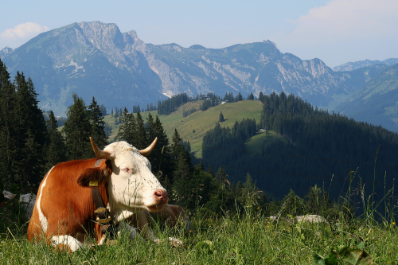

Preston Idaho
5 Day Forecast
Preston Organic Dairy
by NECIA P. SEAMONS Preston Citizen
PRESTON — At a time when dairies are sharpening their pencils to stay in business
and others are simply selling their herds, Jordan and Mandy Darrington have started up
Udderworld Dairy on Hot Springs Road.
The young couple, who moved from Burley a year ago, say that although they work harder
than they ever did for others, running their own dairy has been far more rewarding.
Not only has the work been satisfying, but the relationships they have developed have been
important to the Darringtons.
When they first brought their cows from Oregon to the dairy, neighbors rallied around them
and helped the couple as they milked cows from the time they arrived that night until about
5 a.m. the next morning. That really impressed Mandy.
Since that time, they have found one employee to help them with the daily milking of about
185 of their 220-cow herd. They use a rotary milking system which was installed by the prior
owner of the diary. Jordan said he has worked with a robot system and has found he prefers
the rotary dairy because of its reliability.
He and Mandy also implemented a new electrical fencing system that allows him to move the
herd to different sections of pasture on a daily basis. The charged wire stretches between metal
legs arranged in a circle to create a wheel, which rolls the entire fence along when pulled to a new location.
The couple likes the rolling electrical fence because it offers more flexibility in managing the pastures.
For example, it is easier to accommodate the different growth rate of grass during the year. In the spring,
grass grows higher than in drier times of the year.

Outside Weather
📍 30 North 1st East Preston, ID 83263
☎ 111.222.3333
✉ outsideweather.gmail.org